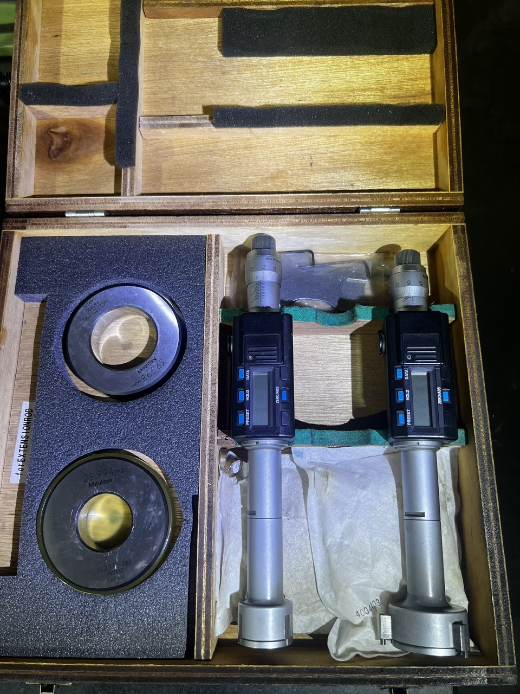
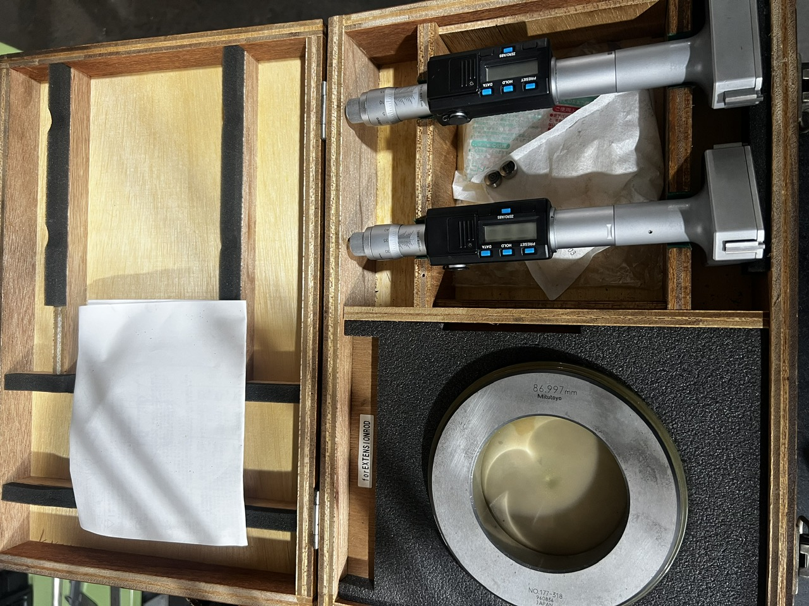
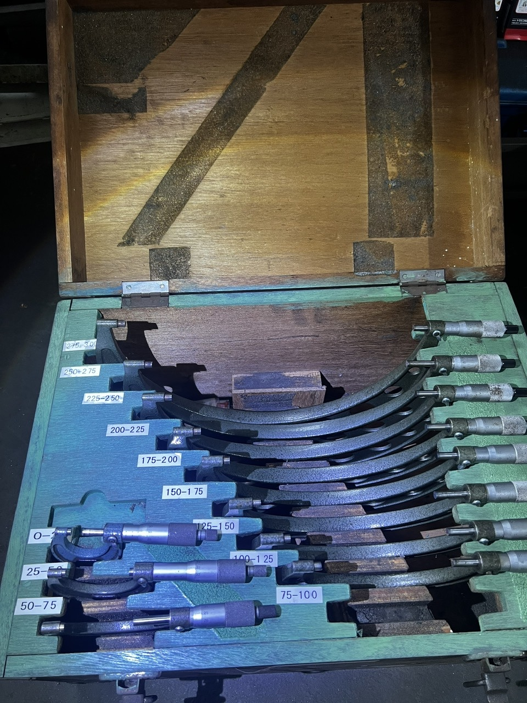
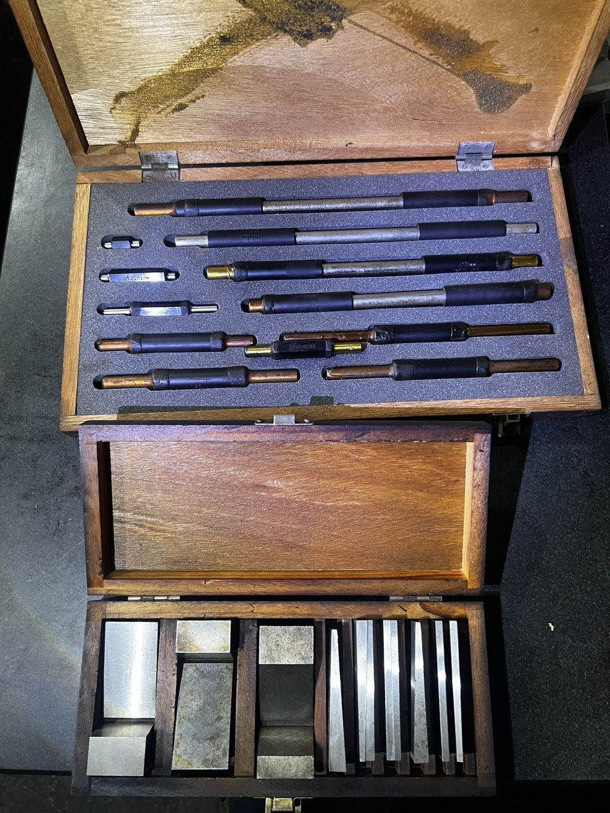
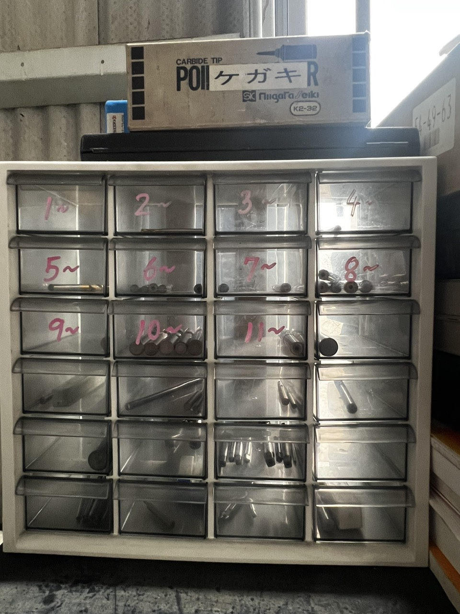

「信頼される技術パートナー」として
イシ インフィニティ株式会社は、構想設計から完成品まで一貫したソリューションを提供する、「信頼される技術パートナー」です。マシニングセンタによる多材質（アルミ・樹脂・鉄・鋼・ステンレス）の高速フライス加工と優れた面品位、そして自動車業界で培った複雑治具（JIG）の設計・製作を自社の強みとしています。
さらにベトナム・日本の戦略的パートナー網により、大型の溶接構造案件までワンストップで対応。厳しい納期と品質基準にも、確かな技術でお応えすることをお約束します。

イシ インフィニティ株式会社
Ici Infinity Co., Ltd.
〒511-0838
三重県桑名市大字和泉283-2
0594-42-5661
受付時間 8:30〜17:30（土日祝を除く）
0594-42-5661
図面送付はFAXでも承ります。
CNC精密加工 ／ 治具設計製作 ／ 溶接構造対応
マシニングセンタによる3D CNC精密加工（アルミ・樹脂・鉄・鋼・ステンレス）、自動車業界向け治具（JIG）の設計・製作、日越パートナー網による溶接構造・板金加工の一括対応。
業務フロー
ご依頼内容に応じて、2つの専門フローでお応えします。タブを切り替えてご確認ください。
要求受付
2D／3D図面（STEP、IGES）を受領し、材質（アルミ・樹脂・ステンレス等）と公差を分析します。
CAM 3Dプログラミング
高速切削戦略を立案し、加工時間の最適化と面品位の確保を図ります。
マシニングセンタ加工
精密な粗加工・仕上げ加工を実施。表面の削れや材料変形（特に樹脂・アルミ）を防止します。
後処理（Post-Processing）
サンドブラストによる微細バリ取りと表面仕上げ、彫刻機によるロゴ・シリアル番号の刻印を行います。
品質管理（QC）
ダイヤルゲージ・ノギス・マイクロメーターで機上測定。出荷前にピンゲージ・ブロックゲージで穴径を検査します。
課題調査
自動車業界をはじめとするラインからの作業・組立要求を受領します。
設計・統合（DFM）
3D構想を立案し、クランプ機構・センサー・ポカヨケ原理を統合。治具本体にポカヨケ指示を刻印します。
加工・組立
ベース・位置決めピン等の構成部品を精密加工。高さゲージ・ダイヤルゲージで平行度・平面度を調整します。
トライアウト・納品
工場内で試運転（Tryout）を実施。CMMで空間測定を行い、現地設置まで納品します。
4つの核心的な強み
3D複雑加工のスペシャリスト
Al・樹脂・鉄・鋼・ステンレスの高速フライス加工を完全にマスター。ツールマークやバリのない面品位を実現。


基準を満たすQCシステム
各工程で厳格な検査体制を敷くQC室。パン目・ダイヤルゲージ・ピン/ブロックゲージ・高さゲージを常備。
実戦的な治具設計の思考
自動車業界の生産・組立工程を深く理解し、エラーを最大限防止する使いやすい治具設計をご提案。


ワンストップ・サプライチェーン
自社能力と日越パートナー網を組み合わせ、極小部品の加工から大規模な溶接構造まで一括対応。
沿革
会社設立、マシニングセンタ導入
三重県桑名市にて創業。機械加工の受託からスタートし、同年に高速マシニングセンタを導入して3D CNC精密加工事業を本格化。アルミ・樹脂をはじめ多材質の受注を拡大しました。
治具設計・製作部門を発足
設計から製作・トライアウトまでの一貫体制を構築。自動車業界向けのポカヨケ治具で取引を拡大しました。
「価値創造企業」として
お客様の期待を超えるモノづくりを目指し、設備・人材への投資を続けています。
イメージの、その先へ。
お客様が思い描く「こうしたい」を、期待を超えるカタチにして届ける——それが私たちの存在意義です。一つひとつの加工に真摯に向き合い、技術と提案力を磨き続けることで、地域とともに成長し、モノづくりの未来をつなぐ企業を目指します。

品質への取り組み
出荷前の全数検査
寸法・外観を全品チェックし、検査記録を残したうえで出荷します。
測定機器による精度保証
測定機器を計画的に校正・管理し、図面公差を確実に保証します。
5S・改善活動の徹底
整理・整頓の行き届いた現場づくりで、不良の発生を未然に防ぎます。
納期遵守の生産管理
受注から出荷までを一元管理し、お約束した納期を必ず守ります。

検査工程
5S現場管理 出荷前確認
出荷前確認